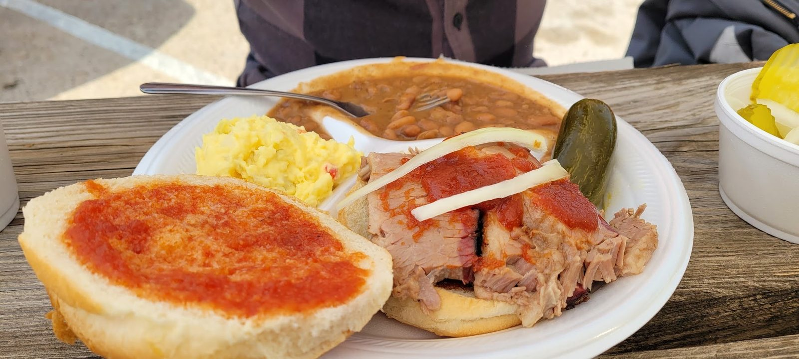

Slow-smoked meats
Brisket, pork ribs, sausage and turkey, with pastrami when they have it.
Pit barbecue · 900 W 12th St, Austin
Slow-smoked brisket, ribs, sausage and turkey from the old brick pit. Walk right in.

Old Austin, no line
Plates, sandwiches and meat by the pound.
Brisket, pork ribs, sausage and turkey, with pastrami when they have it.

Every plate comes with three sides. Sandwiches come on a bun.
Delivery or pickup, with bread, pickles, onions, jalapeños and sauce.


4.6 ★ · 201 Google reviews
GUEST CHECK№ 1Laid back old Austin style. Friendly service. Some of the best brisket and pork ribs in central ATX. Plus they have turkey, which is a nice change from chicken. Try their pastrami when they have it.
GUEST CHECK№ 2Whenever I need to escape the woes of today's ATX, I can rely on House Park BBQ to transport me back to a much simpler time. Not because House Park is simple or that my childhood didn't have depth. But it's like a little bubble of Texas in the ❤️ of whatever the Heart of Texas has become, with friendly staff and a bucket of pickles.
GUEST CHECK№ 3We ordered a bunch of brisket, turkey, and links for our office and the team was blown away! Matt and Dan will take great care of you and fill you up!

Since the first pot of coffee
Smoking meat on West 12th Street since 1943. Austin's oldest pit barbecue restaurant, open again after a four-year break.
Decades of pinned photos, banners and memorabilia cover the walls, and the sign out front still says Need no teef to eat my beef.
Slide on in
900 W 12th St, Austin, TX 78703
Weekdays 11am to 2:30pm, closed weekends. Picnic tables on the patio out front.